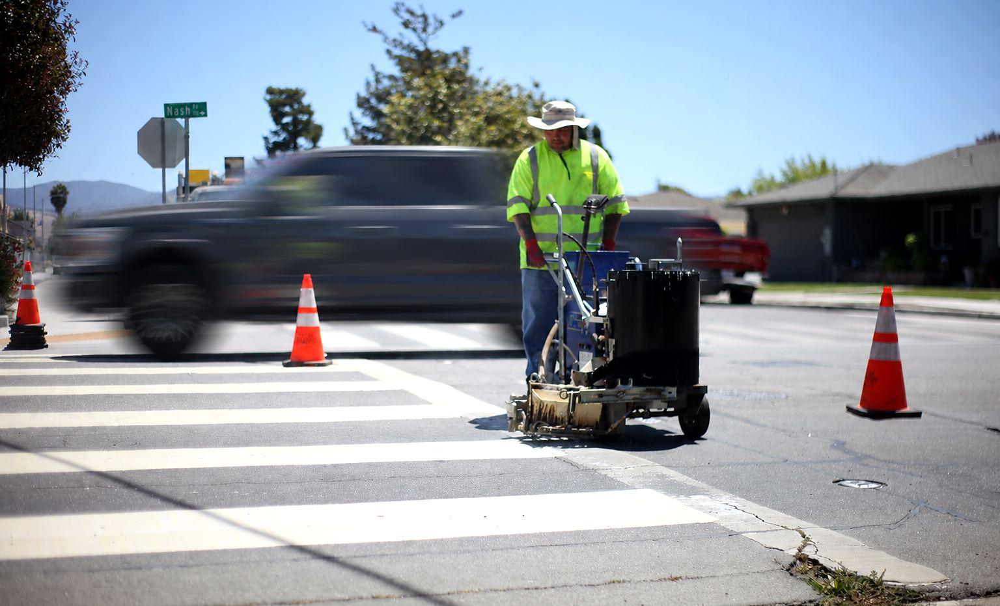
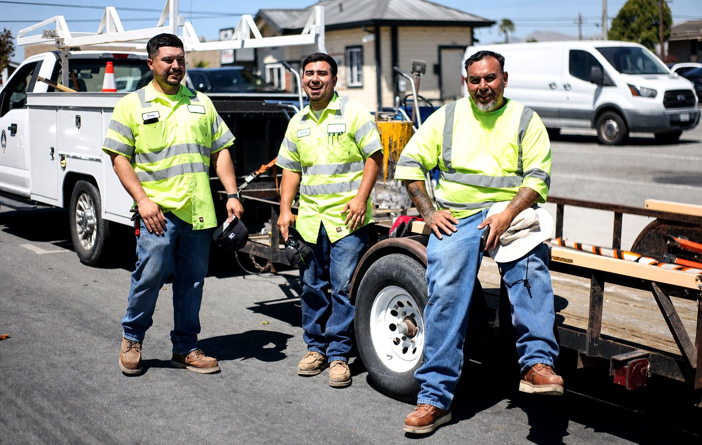
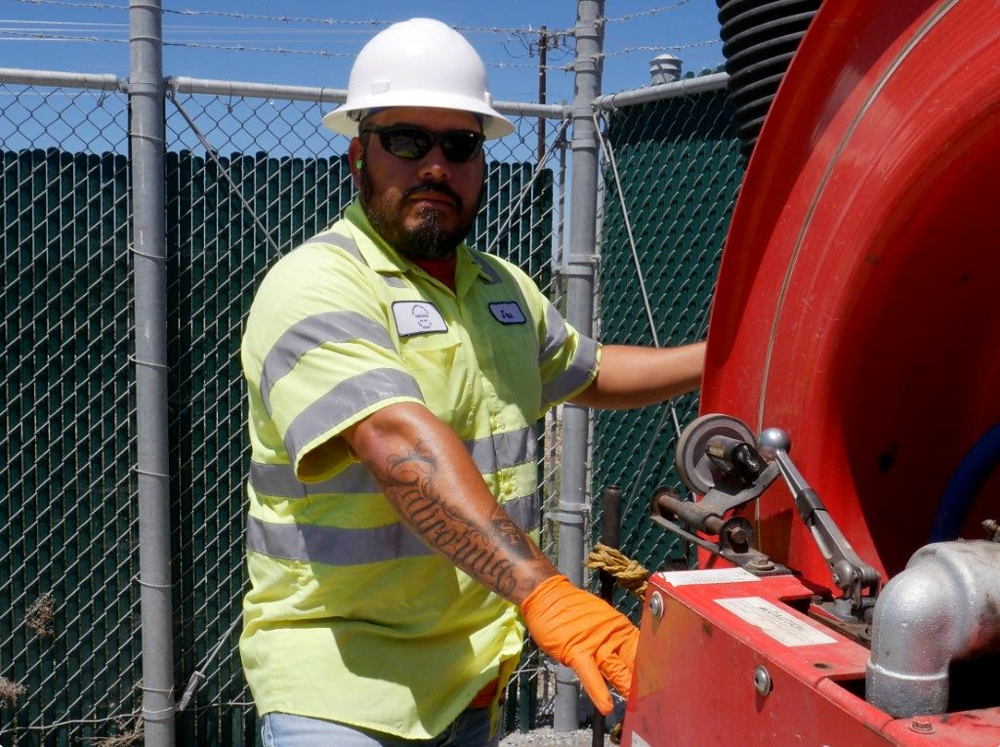
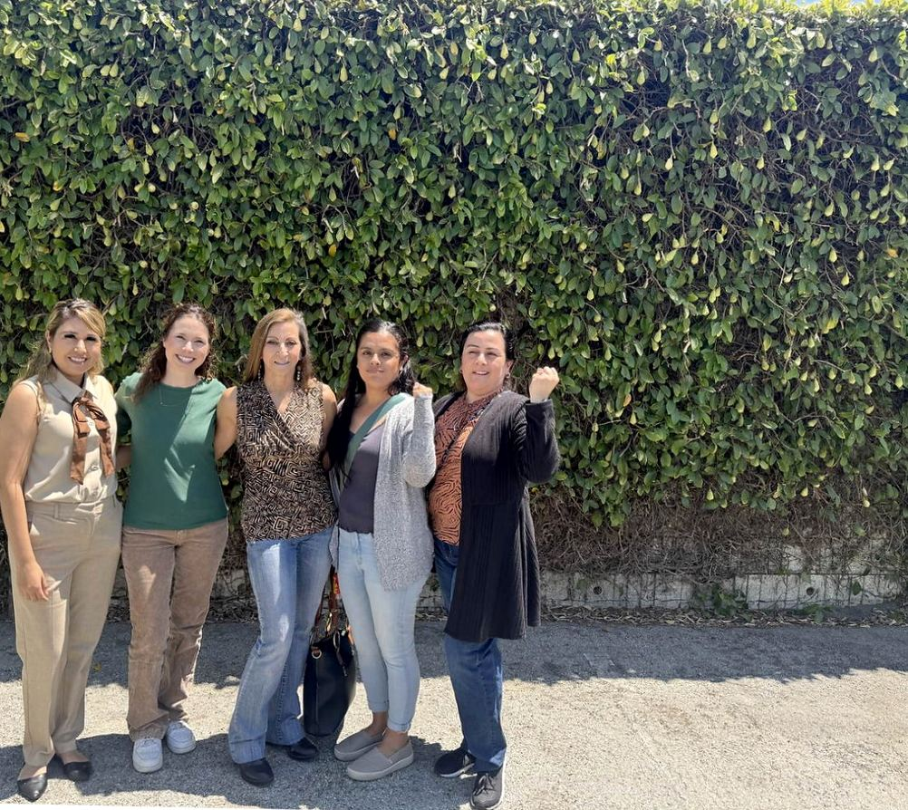

WE ARE HOLLISTER
Protect Hollister
Public Services

ADD YOUR NAME IN LESS THAN 1 MINUTE!
CITY OF HOLLISTER EMPLOYEES
are the backbone of our community.
City services are at risk. Hollister’s budget deficit is a result of years of mismanagement being made worse by plans to aggressively remake local government without genuinely including the city's workforce or our community in substantive discussions.
City employees have helped the city balance its budget in 2025 and they are willing to do it again.

Most of this work happens while you are driving past it. The crosswalk that is bright again on Monday morning. The storm drain that clears before the first rain. The street that gets patched before anyone files a complaint. None of it happens on its own.
Cones and a vest are the only things standing between the crew and traffic that is not slowing down. Doing this safely takes years of practice, and it takes enough people on the job so that one person can watch the road while another runs the machine. The material comes off that machine hot enough to cause serious burns.
They are already running bare bones. The same people who paint the lines patch the potholes, clear the drains and set the detours. Workers say the restructuring proposed under City Manager Ana Cortez would thin these crews further. On a budget sheet those savings look small. On the street they show up as slower repairs, longer waits and more risk for the people still out there doing three jobs in July heat.
Public work does not shrink because a budget does. The pipes still need maintenance. The streets still need repair. Storm drains still need clearing before the first rain. Residents still expect someone to answer when something breaks at six in the morning.
When fewer people are asked to carry the same ground, something gives. Preventive work slides so that emergencies get covered. The small problems nobody had time for turn into the expensive ones. Workers believe continued staffing reductions leave employees exposed and make it harder to hold the level of service this community expects.
Experience is what keeps this work safe. Reading traffic before you step into it. Knowing how a machine behaves when it is running hot. Knowing when a routine repair is actually the start of a serious failure. That judgment takes years to build and it cannot be hired back on short notice.
Tap any photo to see it larger


Storm and sanitation crews keep floodwater moving and keep the system from backing up into streets and homes. The trucks are specialized. The judgment is local. Knowing which line clogs first after a hard rain is not written in a manual that arrives with a contractor.
When crews get thinner, preventive cleaning slides. The first storm of the season becomes the first emergency. Residents feel that in flooded intersections and delayed response, not on a spreadsheet.
Tap any photo to see it larger

Not every essential job happens in a vest on the asphalt. Someone reviews the plans, tracks the work orders, answers the resident who calls about a flooded street, and keeps the paper trail honest. Institutional knowledge lives in those desks too.
When those roles are hollowed out or treated as disposable, field crews lose the support that makes their work safe and effective. The city does not run on trucks alone.
Tap any photo to see it larger
Hollister is not maintained by spreadsheets or organizational charts. It is maintained by people who know where the water pools first in a storm, which stretch of pipe has been failing for years, and how to finish a job without shutting down half a street. None of that is written down anywhere. It leaves when they leave.
Residents understand that cities face hard budget decisions. The question workers and neighbors keep asking is what gets lost when work built around public responsibility is handed to an outside contractor. A contractor arrives without any of this history and answers to a profit margin. The city has already raised the possibility of subcontracting Animal Services and outsourcing our water department.
Public employees are accountable to the community they serve. They live here. They see residents at the grocery store and at their kids' schools. They are invested in Hollister for the long term, and that changes how carefully the work gets done.
Knowledge like this is built over decades and lost in a single budget cycle.
Residents deserve transparency when decisions are made about the reliability of the services they pay for. Workers and community members are asking City leadership to answer plainly:
City of Hollister employees are the backbone of our community. SEIU 521 members are neighbors. They are the people residents see repairing streets, maintaining water systems, clearing drains after a storm and keeping public spaces safe. Their experience is one of the most valuable things this city owns, and it does not appear anywhere on a balance sheet.
City employees helped balance this budget in 2025 and they are willing to do it again. They should not have to do it from a crew too small to keep itself safe. What they are asking for is a real seat at the table before decisions get made about the services this community depends on every day.
Hollister is deciding more than a budget. It is deciding what kind of city it becomes, and who will be left to keep it running.